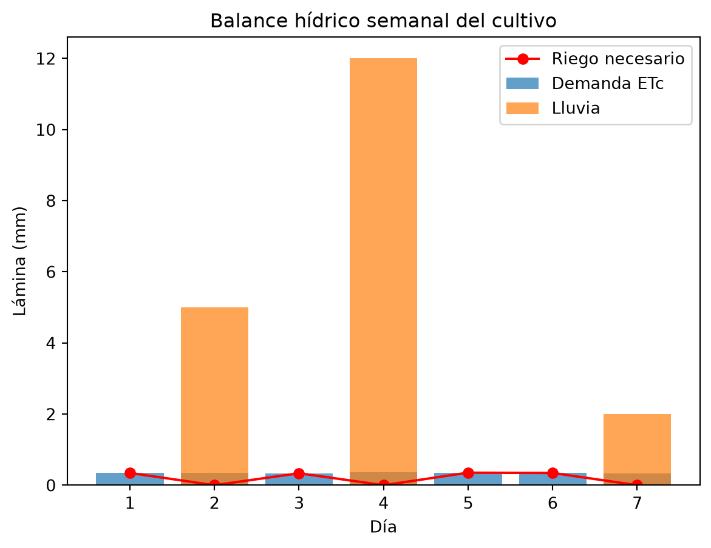
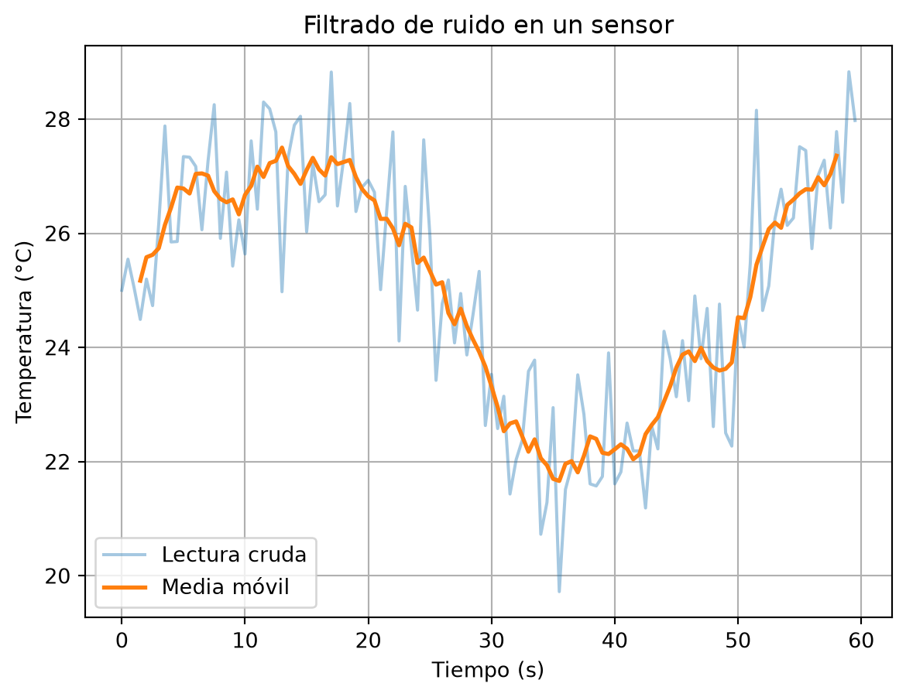
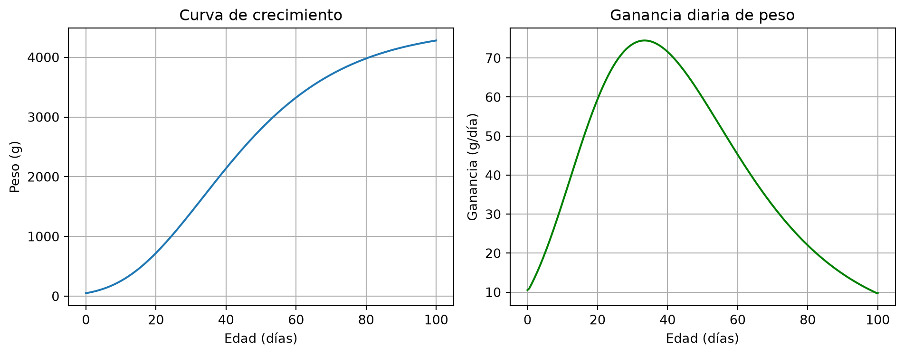

8Aplicaciones en ingeniería: agro, mecatrónica, veterinaria y zootecnia
Python es hoy una herramienta de trabajo diaria en las ingenierías. En este capítulo aplicarás lo aprendido a cuatro problemas reales: balance hídrico para riego (ingeniería agrícola), filtrado de señales de sensores (mecatrónica), dosificación de medicamentos (veterinaria) y crecimiento animal (zootecnia). El patrón siempre es el mismo: modelo matemático → código vectorizado → gráfica → decisión.
8.1 Ingeniería agrícola: ¿cuánta agua necesita el cultivo?
El riego se programa con un balance hídrico: el cultivo pierde agua por evapotranspiración (\(ET_c\)) y la lluvia repone parte; la diferencia es la lámina de riego que debes aplicar:
\[L = ET_c - P_{ef} = K_c \cdot ET_0 - P_{ef}\]
donde \(K_c\) es el coeficiente del cultivo y \(P_{ef}\) la lluvia efectiva. Un método sencillo para estimar \(ET_0\) con datos de temperatura (Hargreaves simplificado):
ET0 diaria (mm): [0.33 0.34 0.32 0.34 0.34 0.33 0.32]
Lámina de riego diaria (mm): [0.34 0. 0.34 0. 0.35 0.34 0. ]
Total semanal: 1.4 mm = 14 m³/ha
np.maximum(..., 0) aplica el límite elemento por elemento: si la lluvia supera la demanda, no se riega. El factor final convierte mm a m³/ha (1 mm sobre 1 ha = 10 m³). Grafiquemos el balance:
dias = np.arange(1, 8)plt.bar(dias, etc, label="Demanda ETc", alpha=0.7)plt.bar(dias, lluvia, label="Lluvia", alpha=0.7)plt.plot(dias, lamina, "ro-", label="Riego necesario")plt.xlabel("Día")plt.ylabel("Lámina (mm)")plt.title("Balance hídrico semanal del cultivo")plt.legend()plt.show()

8.2 Mecatrónica: limpiar la señal de un sensor
Los sensores reales entregan señales con ruido. Un filtro clásico y simple es la media móvil: cada valor se reemplaza por el promedio de sus vecinos, y el ruido se suaviza:
import pandas as pdrng = np.random.default_rng(7)tiempo = np.arange(0, 60, 0.5) # 2 lecturas por segundosenal_real =25+3* np.sin(tiempo /8) # temperatura verdaderalectura = senal_real + rng.normal(0, 1.2, len(tiempo)) # + ruido del sensordf = pd.DataFrame({"tiempo": tiempo, "lectura": lectura})df["filtrada"] = df["lectura"].rolling(window=7, center=True).mean()plt.plot(df["tiempo"], df["lectura"], alpha=0.4, label="Lectura cruda")plt.plot(df["tiempo"], df["filtrada"], linewidth=2, label="Media móvil")plt.xlabel("Tiempo (s)")plt.ylabel("Temperatura (°C)")plt.title("Filtrado de ruido en un sensor")plt.legend()plt.grid(True)plt.show()

rolling(window=7) crea una ventana de 7 puntos; .mean() la promedia. Luego, la lógica de control: detectar cuándo la señal filtrada cruza el umbral (con la cruda habría falsas alarmas):
umbral =27.5alarma = df["filtrada"] > umbralsegundos_en_alarma = alarma.sum() *0.5# 0.5 s por lecturaprint(f"Tiempo sobre el umbral: {segundos_en_alarma:.1f} s")
Tiempo sobre el umbral: 0.5 s
8.3 Veterinaria: dosificación por peso vivo
La dosis de muchos medicamentos se calcula por kilogramo de peso vivo. Con un lote de animales, la vectorización evita errores de cálculo manual:
animales = pd.DataFrame({"id": ["A01", "A02", "A03", "A04", "A05"],"peso_kg": [380, 425, 350, 410, 365]})dosis_mg_kg =10# mg por kg de peso vivoconcentracion =200# mg por ml del producto comercialanimales["dosis_mg"] = animales["peso_kg"] * dosis_mg_kganimales["ml_aplicar"] = animales["dosis_mg"] / concentracionprint(animales)print(f"\nTotal de producto para el lote: {animales['ml_aplicar'].sum():.1f} ml")
id peso_kg dosis_mg ml_aplicar
0 A01 380 3800 19.00
1 A02 425 4250 21.25
2 A03 350 3500 17.50
3 A04 410 4100 20.50
4 A05 365 3650 18.25
Total de producto para el lote: 96.5 ml
Una tabla clara por animal y el total de producto a comprar: eso es exactamente lo que necesita un plan sanitario.
8.4 Zootecnia: curva de crecimiento y ganancia diaria
El peso de un animal en crecimiento sigue bien el modelo de Gompertz:
\[W(t) = A \, e^{-b\, e^{-k t}}\]
donde \(A\) es el peso adulto, \(k\) la velocidad de maduración y \(b\) un parámetro de forma. Simulemos un lote de pollos de engorde:
A, b, k =4500, 4.5, 0.045# peso adulto (g), forma, velocidadt = np.linspace(0, 100, 200) # díaspeso = A * np.exp(-b * np.exp(-k * t))ganancia = np.gradient(peso, t) # derivada numérica: g/díafig, (ax1, ax2) = plt.subplots(1, 2, figsize=(10, 4))ax1.plot(t, peso)ax1.set_xlabel("Edad (días)")ax1.set_ylabel("Peso (g)")ax1.set_title("Curva de crecimiento")ax1.grid(True)ax2.plot(t, ganancia, color="green")ax2.set_xlabel("Edad (días)")ax2.set_ylabel("Ganancia (g/día)")ax2.set_title("Ganancia diaria de peso")ax2.grid(True)plt.tight_layout()plt.show()

Dos novedades: np.gradient calcula la derivada numérica (la ganancia diaria sin derivar a mano), y plt.subplots(1, 2) pone dos gráficas lado a lado. El día de máxima ganancia marca el momento económico óptimo de venta:
dia_optimo = t[np.argmax(ganancia)]print(f"Máxima ganancia diaria: {ganancia.max():.1f} g/día, al día {dia_optimo:.0f}")
Máxima ganancia diaria: 74.5 g/día, al día 34
8.5 Ejercicios
Recalcula el balance hídrico con \(K_c = 0.75\) (etapa inicial del cultivo). ¿Cuánto baja la lámina semanal?
En la señal del sensor, cambia la ventana de la media móvil a 3 y luego a 15. ¿Qué ventana filtra mejor sin deformar la señal? Justifica con las gráficas.
Agrega al DataFrame de animales una columna costo si el producto vale $850 por ml. ¿Cuánto cuesta tratar todo el lote?
Simula con Gompertz el crecimiento de terneros: \(A = 480\) kg, \(b = 3.8\), \(k = 0.0035\), hasta 800 días. Encuentra el día de máxima ganancia.
Calcula la conversión alimenticia de un lote: consumo total de alimento 8.2 toneladas, ganancia total de peso 2.5 toneladas. Luego, si el alimento cuesta $1.800/kg y el kilo en pie se vende a $8.500, ¿cuál fue el margen por kilo producido?
Mini-reto integrador (agro + mecatrónica + economía): un sistema de riego registra la humedad del suelo cada hora durante 5 días. (a) Simula la serie: humedad base que baja 2 puntos por día desde 55 %, más ruido normal de desviación 1.5 (usa rng.normal). (b) Filtra con media móvil de ventana 5. (c) Detecta en qué hora la señal filtrada cruza por debajo del 30 % (umbral de riego) — pista: np.argmax(filtrada < 30). (d) Grafica cruda + filtrada + línea horizontal del umbral. (e) Cada riego cuesta $180.000; si el sistema riega cada vez que se cruza el umbral y la humedad se recupera a 55 % tras cada riego, estima cuántos riegos hubo en la simulación (puedes implementar el reinicio con un while).
8.6 Resumen
El patrón ingenieril: modelo → vectorización → gráfica → decisión.